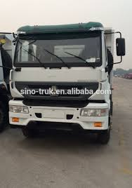

In the last several years, light truck sales have steadily increased throughout the United States, according to reports from the U.S. Department of Energy. In 2011, 6.1 million passenger cars were sold, compared to the rising number of 6.6 million light trucks. These statistics highlight the growing popularity of light trucks in the United States today. As these particular vehicles continue to rise in popularity, it is important to understand the different types of trucks as well as the potential dangers associated with operating them.
Alabama residents will recognize a large number of light trucks on the roads and highways throughout the state. In addition to these types of truck, there are a variety of larger trucks that present an even greater danger on the roadways. Large commercial vehicles and trucks, such as 18-wheelers and tractor-trailers, maintain an enormous structure, size, and weight. These larger attributes increase the severity of accidents and injuries when a collision occurs.
Beyond the structural hazards involved in driving in close proximity to these large trucks, there are a variety of factors that make these vehicles difficult to navigate. For instance, the blind spots of big trucks are often far greater than that of a standard car. As such, any passenger vehicle traveling in this area is at serious risk of a potential crash.
Citrin Law Firm has always supported the safe navigation of vehicles in Alabama. Through our Citrin Safety Foundation we are able to educate teen drivers about the dangers associated with distracted driving and texting while driving. Unfortunately, there is still a rising number of auto accidents in the state. If you or a loved one has been injured in a truck accident, our Mobile personal injury lawyers are here to help.
For more information regarding your case, please fill out a Free Case Review form on this page.
Truck TypeThe types of truck traveling on the roads of Alabama today vary greatly. Each of these trucks serves a specific purpose for the state and, unfortunately, each present a different set of potential dangers in the event of a traffic collision. As such, it is important for all AL drivers to be aware of the various types of trucks in order to be prepared to operate their vehicle in close proximity to them. The following are some of the most common types of trucks typically involved in traffic accidents:
Semi-Trailer TruckThese are articulated vehicles which use a towing engine, the semi-trailer, to carry freight and cargo loads. Semi-trailer trucks are also referred to as tractor-trailers, 18-wheelers, and big rigs. These particular trucks are typically involved in catastrophic accidents that tend to lead to severe injuries, often fatalities. Any trucker who operates these vehicles must obtain a special license in order to legally transport freight.
Extra Duty TruckWhen a cargo load is extremely large, an extra duty truck is often utilized to carry the large freight. These massive loads include things such as houses or otherwise enormous items being carried. Truckers operating extra duty trucks must carry a special license to legally do so.

A type of semi-trailer truck, these types of truck specify that there are 18 wheels. These are the most commonly used trucks to carry cargo. In fact, upwards of 85 percent of freight loads shipped are transported on an 18-wheeler truck.

Tanker trucks get there name due to the large tank that is used to store gases and liquids. These trucks only carry liquids and gases and are therefore extremely dangerous in the event of a collision. Tanker trucks are typically associated with the hazardous materials in the loads that they carry.
Heavy trucks are actually the largest vehicle that is legally permitted to operate on the roads and highways of Alabama. These vehicles have an enormous blind spot, so all Alabama motorists must be aware of this risk factor while traveling near heavy trucks.
Alabama drivers will recognize flatbed trucks by their open truck beds and lack of sides. The design of the flatbed truck helps to make loading up and transporting goods as easy and efficient as possible. Sadly, then cargo is improperly loaded on these flatbeds, the likelihood of a crash is high.
Waste collections vehicles, also referred to as garbage trucks are important to all residents of Alabama. These garbage trucks make stops at homes to pick up smaller amounts of trash to be taken to the local landfill, recycling plant, or treatment facility. Garbage trucks are also known for having large blind spots, therefore drivers must react accordingly.
Dump trucks are also referred to as production trucks and are used to transport gravel, sand, dirt, and other loose materials that are used in construction. In addition, dump trucks can be used to carry waste to landfills. These vehicles have an open box that is hydraulically operated to dump the contents of the open box behind the vehicle. Dump trucks are often involved in crashes as they attempt to back up.
A small truck or can which maintains a fully bounded body is called a panel truck. These are typically used as delivery trucks for things such as baked goods, laundry, flowers, or any other types of consumer products.
Citrin Law Firm has more than 25 years of legal experience, helping residents throughout the state of Alabama to seek the justice that they deserve. During our time providing professional legal services to all AL drivers, we have built a strong reputation across the state. With over $40 MILLION in past verdicts and settlements, our Mobile personal injury attorneys have proven that they know what it takes to win.
We strongly believe that when the careless actions of another driver cause injury or harm to you and your family, this at-fault party must be held liable for the damages in which they have caused. If you or a loved one has been injured in a crash, our Mobile accident lawyers are here for you.
Fill out a Free Case Review form to get started today.
MOBILE OFFICE
MONTGOMERY OFFICE: